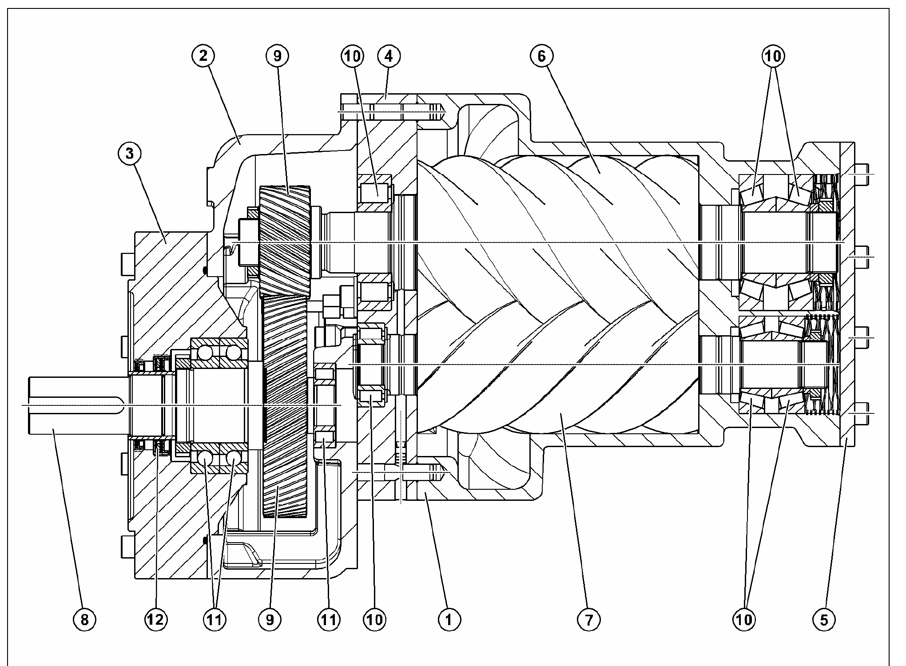
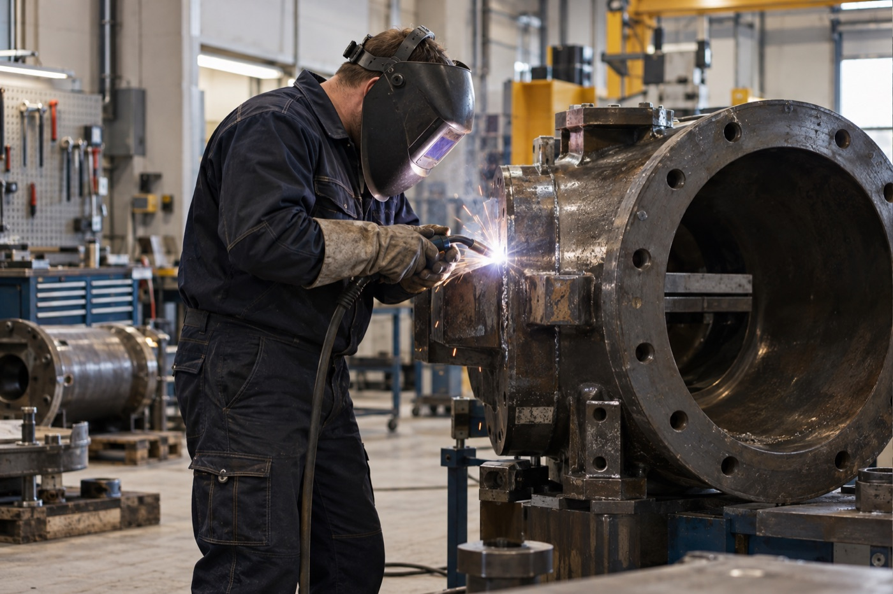
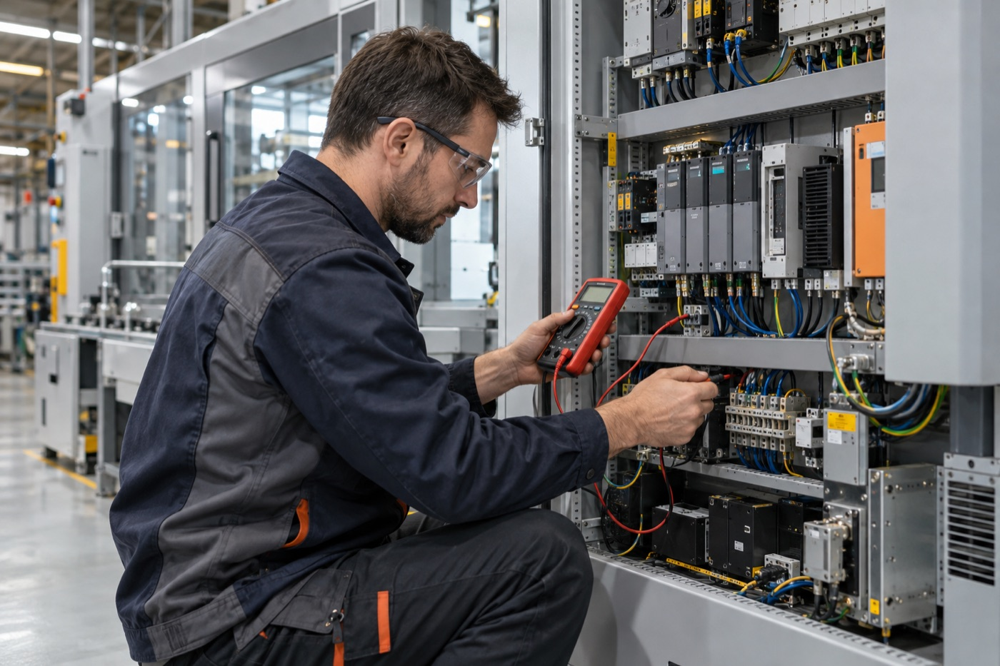
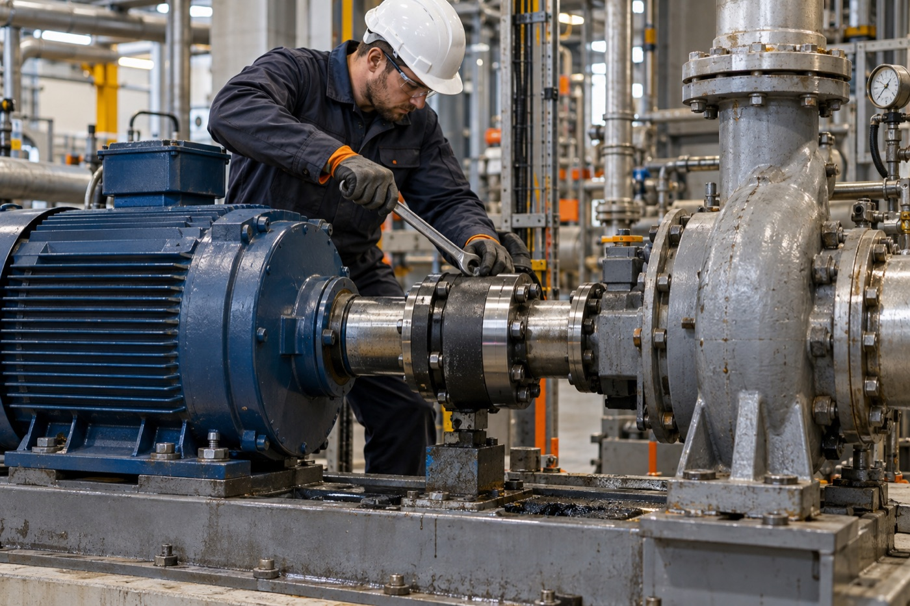
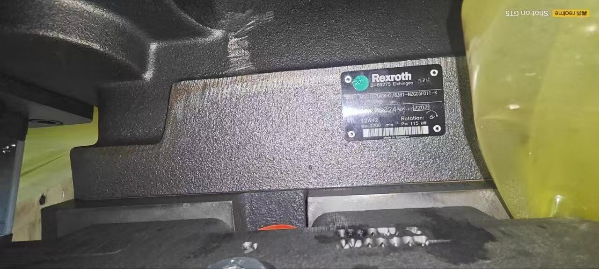
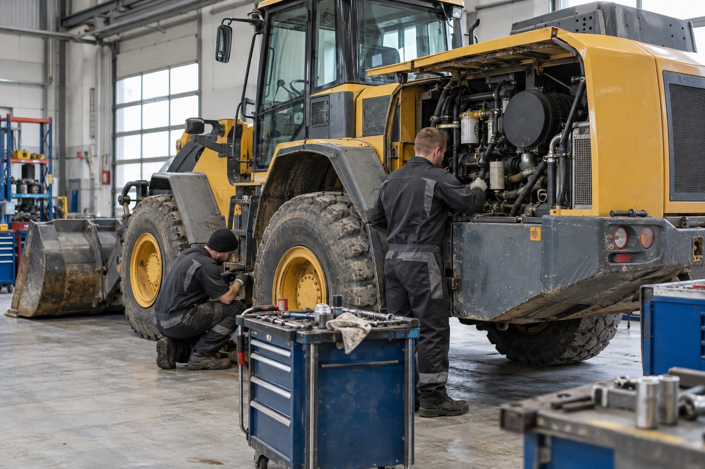
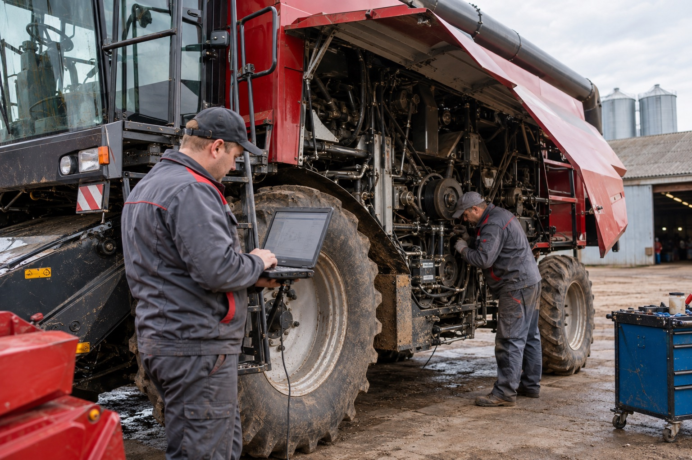

01
Диагностика
Уточняем симптомы, технические параметры, маркировку и условия эксплуатации оборудования.
Диагностика, ремонт и техническое обслуживание импортного промышленного оборудования и спецтехники. Подбор и поставка запчастей, включая сложные детали и аналоги из Китая.

От первичной диагностики и поиска детали — до ремонта, установки и проверки результата.
Усиливаем технические возможности предприятия и берём на себя сложные участки работы.
Уточняем симптомы, технические параметры, маркировку и условия эксплуатации оборудования.
Организуем согласованные ремонтные работы, замену деталей, сборку и проверку результата.
Заказываем детали у своих поставщиков и заводов-партнёров, проверяем технические параметры и соответствие задаче.
Подбираем замену для импортных узлов и комплектующих с учётом применимости и характеристик.
Подключаем профильных специалистов и согласованную производственную базу для сложных работ.
Рассматриваем варианты замены устаревших решений и адаптации оборудования под текущие задачи.
Оцениваем сложность и технологию процесса, формируем решение и работаем по техническому заданию заказчика.
Поставляем не только детали для собственного ремонта. По заявке предприятия подбираем и привозим отдельные запчасти, узлы, промышленное оборудование, части производственных линий и комплектные производственные линии.




Собираем технические данные и находим применимое решение. Наши квалифицированные специалисты имеют опыт работы в Европе с европейским оборудованием, работают с китайской техникой и проходили профильное обучение по её обслуживанию.
Берём в работу уборочные и коммунальные машины, погрузчики, тракторы с навесным оборудованием, зерноуборочную и посевную технику, буровые установки и другую импортную спецтехнику.
Проводим диагностику, ремонт и сервисное обслуживание. Заменяем изношенные детали и узлы, подбираем совместимые запчасти и разрабатываем инженерные решения, когда стандартного варианта нет.


Объём, сроки и стоимость фиксируются после проверки исходных данных и согласования технической задачи.
Фото, маркировка, описание неисправности и исходные технические данные.
Диагностика, параметры детали, варианты ремонта или поставки.
Перечень работ, сроки, расчёт стоимости и ответственность сторон.
Выполняем согласованные работы или поставку, устанавливаем и проверяем результат.
Берём на себя те участки, где необходимы дополнительная компетенция, надёжные поставщики, производственная база, детали или запчасти. Работы выполняют профильные специалисты под конкретную задачу.
Соблюдаем конфиденциальность заказчиков и не публикуем названия предприятий. Первый кейс — реализованный проект, ещё два показывают типовые задачи, которые мы берём в работу.
Компрессор поступил с комплексом неисправностей: износом уплотнений и рабочих элементов, загрязнением внутренних полостей и отсутствием части необходимых компонентов. Схем разборки и сборки не было ни у заказчика, ни в открытом доступе.
Провели дефектовку, полную разборку и очистку, заменили комплект изношенных деталей и масло, выполнили необходимые слесарно-механические и восстановительные работы на станочном оборудовании. Один критически важный компонент, которого не было в Беларуси и России, подобрали у завода-партнёра в Китае и срочно доставили авиа. Компрессор собрали благодаря четырёхлетнему опыту наших инженеров по работе с таким оборудованием в Германии, после чего проверили его рабочие параметры.
Износ посадочных мест, подшипников и уплотнений. Новый узел недоступен, а его поставка означала бы длительный простой оборудования.
Разобрали и очистили узел, провели полную дефектовку и точные замеры валов, посадочных мест и корпусных деталей. Выполнили слесарно-механическое восстановление изношенных посадочных поверхностей с последующей обработкой под нужные допуски. По размерам и условиям работы подобрали совместимые подшипники и уплотнения, затем собрали узел, проверили зазоры, плавность хода и работу под нагрузкой.
Оригинальный ремкомплект оценивался примерно в 3 200 €. Требовалось снизить затраты без замены всего промышленного узла.
Инженеры провели дефектовку узла, сняли точные размеры и определили требования к материалам с учётом температуры, давления и рабочей среды. Сопоставили параметры оригинала с технической документацией завода-партнёра и подобрали совместимый заводской комплект из Китая стоимостью около 1 100 $. До заказа проверили комплектацию, геометрию деталей и техническую применимость, а после поставки — фактическое соответствие полученных компонентов.
Для первого разговора достаточно марки и модели оборудования, фотографии узла или детали и краткого описания неисправности.